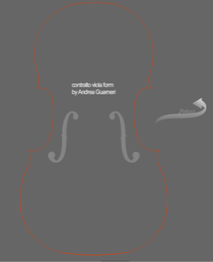

The segments of the framework are tied in a specific proportional relations so-called "analogic".
These segments are used as the radius of the arcs that trace the outline of the form.
This flash animation viola Guarneri illustrates the process step by step.